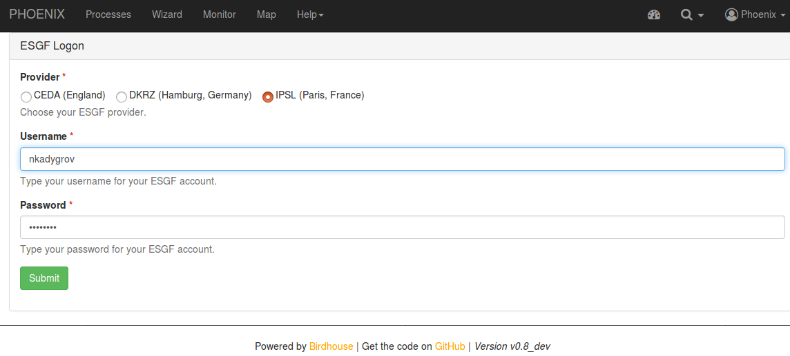
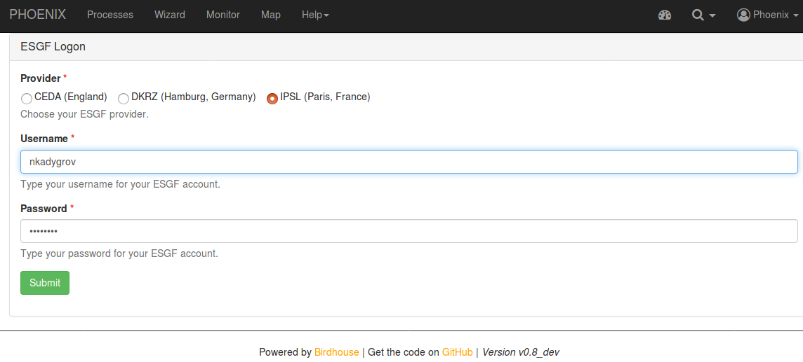

3. Run Hello process with birdy
6. Run Hello from Jupyter notebook (with owslib client)
You have already preinstalled main components of WPS system.
Let's install one WPS service, one for demonstration.
The installation procedure are the same for any service.
Clone from github -> configure is needed -> make install -> make start
Birdhouse WPS is installed in your home folder with 5 pre installed services:
$ cd ~/birdhouse/
$ ls
blackswan flyingpigeon hummingbird malleefowl pyramid-phoenix
Now we will install emu service, following installation procedure:
$ cd ~/birdhouse/
$ git clone https://github.com/bird-house/emu.git
$ cd emu
$ make clean install
You may check the file environment.yml with the packages that will be installed in emu conda environment
All the birdhouse components follow the same installation pattern. If you want to see all the options of the Makefile then type:
$ make help
You can also change the settings in custom.cfg file like hostname, ports, log-level etc.
Options from this file overtakes the base settings in ~/birdhouse/emu/profiles/base.cfg
The important setting to be used later is http-port which is 8094 for emu service
Now you need to start your service(s):
$ cd ~/birdhouse/emu/
$ make start
Check that all the services are running:
$ make status
~/birdhouse/emu$ make status
Supervisor status ...
bin/supervisorctl status
blackswan RUNNING pid 12826, uptime 0:00:03
celery RUNNING pid 12827, uptime 0:00:03
emu RUNNING pid 12810, uptime 0:00:03
flyingpigeon RUNNING pid 12811, uptime 0:00:03
hummingbird RUNNING pid 12831, uptime 0:00:03
malleefowl RUNNING pid 12829, uptime 0:00:03
mongodb RUNNING pid 12809, uptime 0:00:03
nginx RUNNING pid 12828, uptime 0:00:03
phoenix RUNNING pid 12813, uptime 0:00:03
solr RUNNING pid 12830, uptime 0:00:03
tomcat RUNNING pid 12812, uptime 0:00:03
Emu is running on the port 8094, you can check its status:
$ firefox http://localhost:8094/wps
If everything is OK you should get the following response:
<!-- PyWPS 4.0.0 -->
<ows:ExceptionReport xsi:schemaLocation="http://www.opengis.net/ows/1.1 http://schemas.opengis.net/ows/1.1.0/owsExceptionReport.xsd" version="1.0.0">
<ows:Exception exceptionCode="MissingParameterValue" locator="service">
<ows:ExceptionText>service</ows:ExceptionText>
</ows:Exception></ows:ExceptionReport>
As I showed in presentation, WPS works in request – response manner.
Run the GetCapabilities request:
http://localhost:8094/wps?service=WPS&version=1.0.0&request=getcapabilities
You will get the response with description of all available processess, and particular for 'hello' process (Identifier hello):
<wps:Process wps:processVersion="1.5">
<ows:Identifier>hello</ows:Identifier>
<ows:Title>Say Hello</ows:Title>
<ows:Abstract>Just says a friendly Hello.Returns a literal string output with Hello plus the inputed name.</ows:Abstract>
<ows:Keywords><ows:Keyword>hello</ows:Keyword>
<ows:Keyword>demo</ows:Keyword>
</ows:Keywords>
<ows:Metadata xlink:href="https://emu.readthedocs.io/en/latest/processes.html" xlink:title="User Guide" xlink:type="simple"/>
<ows:Metadata xlink:href="https://pywps-demo.readthedocs.io/en/latest/" xlink:title="PyWPS Demo" xlink:type="simple"/>
</wps:Process>
Get the description of the process 'hello':
http://localhost:8094/wps?service=WPS&version=1.0.0&request=describeprocess&identifier=hello
And execute hello process with your Username (use any name in request url instead of Username):
http://localhost:8094/wps?service=WPS&version=1.0.0&request=execute&identifier=hello&DataInputs=name=Username
Check the results! (wps:ProcessOutputs block and the wps:Data section)
So, this is how WPS works with http requests, now lets check how it works from command line
We will install birdy tool for that
We will install birdy as conda package.
$ conda install -c birdhouse birdhouse-birdy
For the birdy usage, check the following tutorial
You need to set WPS_SERVICE env variable, to let birdy knows which service to use:
As you remember, port 8094 corresponds to emu, you can check the ports of each service in custom.cfg file
Blackswan runs at 8096 (~/birdhouse/blackswan/custom.cfg)
Hummingbird runs at 8092 (~/birdhouse/hummingbird/custom.cfg)
etc.
So, to use emu service:
$ export WPS_SERVICE=http://localhost:8094/wps
If you want to use another service, set WPS_SERVICE env variable to corresponding WPS, for example:
$ export WPS_SERVICE=http://wps-test.ipsl.jussieu.fr:8094/wps
So, now we can rum hello process with birdy
Get the list of available processes for the service:
$ birdy -h
birdy -h usage: birdy [<options>] <command> [<args>] Emu: WPS processes for testing and demos. optional arguments: -h, --help show this help message and exit --debug enable debug mode --version show program's version number and exit --sync, -s Execute process in sync mode. Default: async mode. --token TOKEN, -t TOKEN Token to access the WPS service. command: List of available commands (wps processes) {ultimate_question,sleep,nap,bbox,hello,dummyprocess,wordcounter,chomsky,inout,binaryoperatorfornumbers,show_error,multiple_outputs,esgf_demo} Run "birdy <command> -h" to get additional help. ultimate_question Answer to the ultimate question: This process gives the answer to the ultimate question of "What is the meaning of life? sleep Sleep Process: Testing a long running process, in the sleep.This process will sleep for a given delay or 10 seconds if not a valid value. nap Afternoon Nap (supports sync calls only): This process will have a short nap for a given delay or 1 second if not a valid value. This procces only supports synchronous WPS requests ... so, make sure the nap does not take to long. bbox Bounding box in- and out: Give bounding box, return the same hello Say Hello: Just says a friendly Hello.Returns a literal string output with Hello plus the inputed name. dummyprocess Dummy Process: DummyProcess to check the WPS structure wordcounter Word Counter: Counts words in a given text. chomsky Chomsky text generator: Generates a random chomsky text inout In and Out: Testing all WPS input and output parameters. binaryoperatorfornumbers Binary Operator for Numbers: Performs operation on two numbers and returns the answer. This example process is taken from Climate4Impact. show_error Show a WPS Error: This process will fail intentionally with a WPS error message. multiple_outputs Multiple Outputs: Produces multiple files and returns a document with references to these files. esgf_demo ESGF Demo: Shows how to use WPS metadata for processes using ESGF data.
Get the information about hello process :
$ birdy hello -h
birdy hello -h
usage: birdy hello [-h] --name [NAME] [--output [{output} [{output} ...]]]
optional arguments:
-h, --help show this help message and exit
--name [NAME] Your name: Please enter your name.
--output [{output} [{output} ...]]
Output: output=Output response: A friendly Hello from
us. (default: all outputs)
You can see the list of arguments. The mandatory arguments come without [].
In case of hello process there is only 1 mandatory argument: name
So, finally, to run the process do:
$ birdy hello --name AnyUserName
$ birdy hello --name AnyUserName [ProcessAccepted 0/100] PyWPS Process hello accepted [ProcessSucceeded 0/100] PyWPS Process Say Hello finished Output: output=Hello AnyUserName
Here we showed the examples with the simplest cases, but in general, this is how any WPS service and processess work.
Now, let's move to the graphical interface for WPS: Phoenix
Phoenix runs at 8081 port with redirection to https 8443
In firefox, open:
https://localhost:8443/
and sign in as phoenix (administrator) user (if you didn't change the password the default one is qwerty )
If you open the processes bookmark in the top menu (https://localhost:8443/processes)
you will not find the processes for Emu
You (administrator) have to register Emu WPS service

Go to the settings -> services (https://localhost:8443/services)
There you can see already registered services for Phoenix
Let's add new, Emu WPS service
Click Register a new Service and fill the fields as follows:
That's it! Now Emu processes is available in the menu.
Administrator have to do it only once, so if you need to register WPS service, now you know how.
Now we are ready to run our first Emu process in Phoenix:
Go to the Processes in the top menu, select Emu
From the list of the processes select 'Say Hello' process, type your name and click 'Submit'
You will get to Monitoring page, where all the outputs on the processes are https://localhost:8443/monitor
Click to the Details of the run. There will be the log of the job, and the input/output bookmarks.
Go to the output and see the result of the job:
Basically, this is how to run any process using Phoenix GUI
If the process requires complex inputs, say from the ESGF search results, the Wizard menu should be used instead of Processes.
We will consider these cases in next chapter.
As was shown during the demontstarion, WPS processes can utilize model data from ESGF.
And as a huge advantage, may use local archive without need to download the data.
As an example, let's calculate one climate indice, HD17: Heating degree days [sum of 17 degrees - mean temperature], for several IPSL models at once.
For that we will use our local birdhouse instance and IPSL wps-test VM.
Open your local Phoenix GUI:
https://localhost:8443
Select:
1. Wizard - No Favorite
2. Flyingpigeon
3. Climate indices (Single variable) - Climate index calculated from one daily input variable.
4. Index: HD17
Region: CAN (We will also do subsetting of Canada)
Grouping: yr
5. Resource: NetCDF...
6. Source: ESGF
At this step you need to update your ESGF credential! (Only once) - Press update
 

7. Search for ESGF data as follows:
start year: 1950
end year: 2005
project: CMIP5
variable: tas
experiment: historical
ensemble: r1i1p1
cmor_table: Amon
institute: IPSL
As result, 3 datasets will be found
If you press model in Categories, you will se which models are selected:
Now press Next, optionnaly you may give a caption name for the run, and press Done
The process will start.
You may monitor it's execution in Details section. Refresh list, and see the outputs.
One output netCDF file will be provided, along with tar archive with all results.
Also you can 'Show on Map' your results:
As an exercise, try to run the same calculation on https://wps-test.ipsl.jussieu.fr:8443
Now, we will work in Jupyter notebook
First, you need to pull the exercises from the gitgub
$ cd ~/birdhouse/blackswan/
$ git pull
For the training we will work in ~/birdhouse/blackswan/WS/ folder under the blackswan conda environment.
Thus we will be able to run different notebooks for different services.
$ cd ~/birdhouse/blackswan/WS/
Now, you need to activate an environment:
$ source activate environment
If it doesn’t work – it means that you did not add $HOME/anaconda/bin to your ~/.bashrc file.
Instead, you may use:
$ export PATH=$HOME/anaconda/bin:$PATH
$ source activate environment
or
$ source ~/anaconda/bin/activate blackswan
But we strongly recommend to add anaconda bin path to ~/.bashrc
When the blackswan environment is active, you should see it in your terminal like this:
(blackswan) username:~/birdhouse/blackswan/WS$
Now install Jupyter in your environment with pip:
$ cd ~/birdhouse/blackswan/WS/
$ pip install jupyter
And run it:
$ jupyter notebook
You will get the browser with address http://localhost:8888/tree
Something similar to this:
Now, just open the notebook and follow the instructions there
Start with WPS_Emu_hello.ipynb notebook
after check the WPS_Hum_OWSLIB.ipynb
and finally WPS_anattribution.ipynb